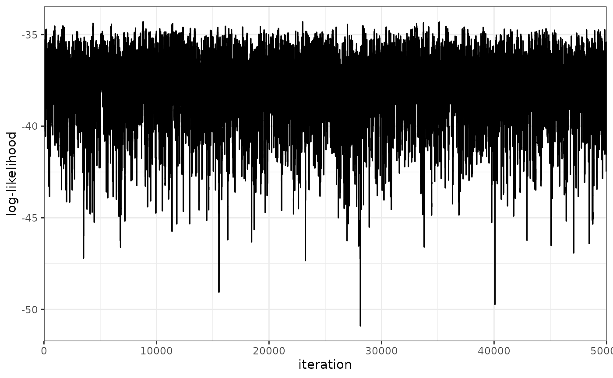
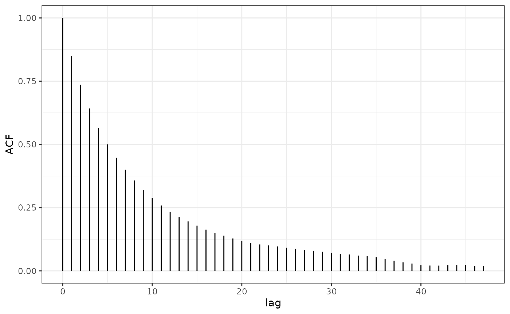

Model Choice and Validation
Michael Stevens
2020-06-08
Source:vignettes/model-validation.Rmd
model-validation.RmdIntroduction
If you have followed any of the basic tutorials for Silverblaze you would have already seen a few ways to validate the model that has been used. In this tutorial we will walk through an extensive list of ways that ensure the model is behaving as it should be. We are responsible for simulating the data in the basic tutorials, so a good way to know if the model is successful is if it returns the correct parameter values that were used to generate the data. Of course, this will not be the case in a real-world data set. So here we will be focussing on methods of model validity that are independent of parameter estimation. In addition to this, we shall also briefly discuss model choice. Silverblaze offers a finite mixture model for geographic profiling and we require a method for choosing the number of mixture components that best describe the data.
This tutorial will cover model validty:
- A healthy MCMC trace
- Auto-correlation
- Effective sample sizes
- Acceptance rates for proposed Metropolis-Hastings steps
and model choice:
- Deviance information criterion
Model Validity
Let’s start with the MCMC log-likelihood trace.
plot_trace(p, K = 3)

plot_acf(p, K = 3)

plot_density(p, K = 3)

plot_loglike_diagnostic(p, K = 3)

get_ESS(p)
## using K = 1 by default## rung1
## 5808.843We can also check that acceptance rates within our Metropolis-Hastings steps are at appropriate values. In this case, we are aiming for an acceptance rate of 23% for sources and 44% for sigma (see Garthwaite, Fan, and Sisson (2016) for more information).
acceptanceSource <- get_output(p, "source_accept_sampling", K = 3, type = "summary") acceptanceSigma <- get_output(p, "sigma_accept_sampling", K = 3, type = "summary") acceptanceSigma <- unlist(acceptanceSigma) acceptanceSigma <- acceptanceSigma[which(acceptanceSigma > 0)]
Model choice
As we have seen above, there are many ways of checking the ability of the model but we’ve done very little to compare the difference between models. Given we adopt a finite mixture model, we must decide on which value of K best describes the data. Spiegelhalter et al. (2014) offers a metric for model comparison when estimating parameters via MCMC methods. The deviance information criterion (DIC) is calculated in two steps. Firstly we calculate the model deviance, which is the mean of the log-likelihood multiplied by -2. We then add to this a penalty term for the complexity of the model. The complexity is calculated as the variance in the log-likelihood multiplied by 4.
This DIC can be visualised using the plot_DIC_gelman() function. Let’s have a look at the DIC values for our models from tutorial 1.

As we can see the model with the lowest DIC is the one fitting 3 sources. This is exactly what we would expect given we simulated under a model where K = 3.
References
Garthwaite, P. H., Y. Fan, and S. A. Sisson. 2016. “Adaptive optimal scaling of Metropolis–Hastings algorithms using the Robbins–Monro process.” Communications in Statistics - Theory and Methods 45 (17). Taylor & Francis: 5098–5111.
Spiegelhalter, D J, N G Best, B P Carlin, and A Van Der Linde. 2014. “The deviance information criterion: 12 years on.” Journal of the Royal Statistical Society: Series B 76: 485–93.